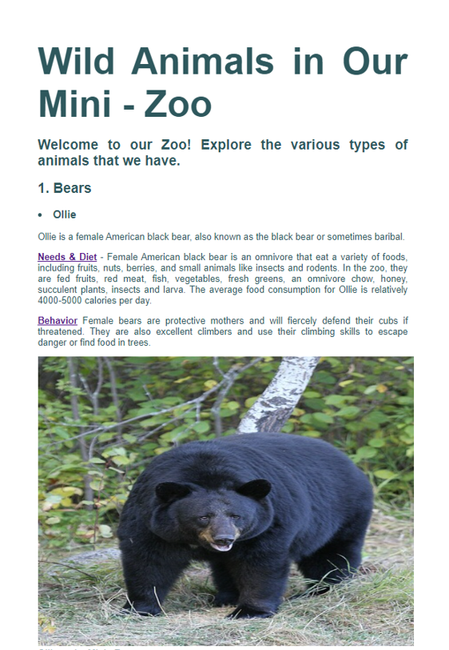
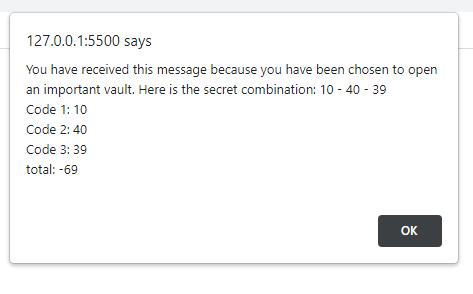

Project 1 - Zoo Problem.
As a web developer, my team was recently hired by the Wild Animal Mini-Zoo to create a new web page for their zookeeper interns. The goal of the project was to make it easier for the new interns to identify each animal in the zoo and to understand their needs and behaviors.
To accomplish this, we designed a user-friendly web page that displayed photos and information about each animal. The web page included a search function, which allowed users to quickly find the animal they were looking for, and a filter function, which allowed users to narrow down the animals based on various criteria, such as habitat or diet.
To ensure that the information on the web page was accurate and up-to-date, we worked closely with the zoo's animal care team to gather information about each animal's needs and behaviors. This information was then incorporated into the web page, along with photos and other visual elements to help users identify each animal.
Overall, the project was a success, and the Wild Animal Mini-Zoo's new zookeeper interns now have an easy-to-use tool to help them learn about and care for the animals in the zoo.
Check out my project Here!.

Project 2 - Secure the Vault
For this project, I was tasked with building a vault that required three mathematical calculations to generate the three codes in a combination, using JavaScript. To accomplish this, I created three variables in JavaScript, each representing the result of a different arithmetic operation.
Using the addition, subtraction, and multiplication operators, I calculated three separate numbers that would form the combination for the lock. After calculating the three numbers, I used the JavaScript console to verify that the numbers were correct.
Next, I displayed the combination on the HTML page, using an alert popup. This allowed users to easily see the combination and use it to unlock the vault.
Overall, using JavaScript to generate the combination for the vault provided a higher level of security, as the combination was unique and not easily guessable. Additionally, the automated process made it easier for users to access the contents of the vault without having to manually calculate the combination themselves.
Check out my project Here!
